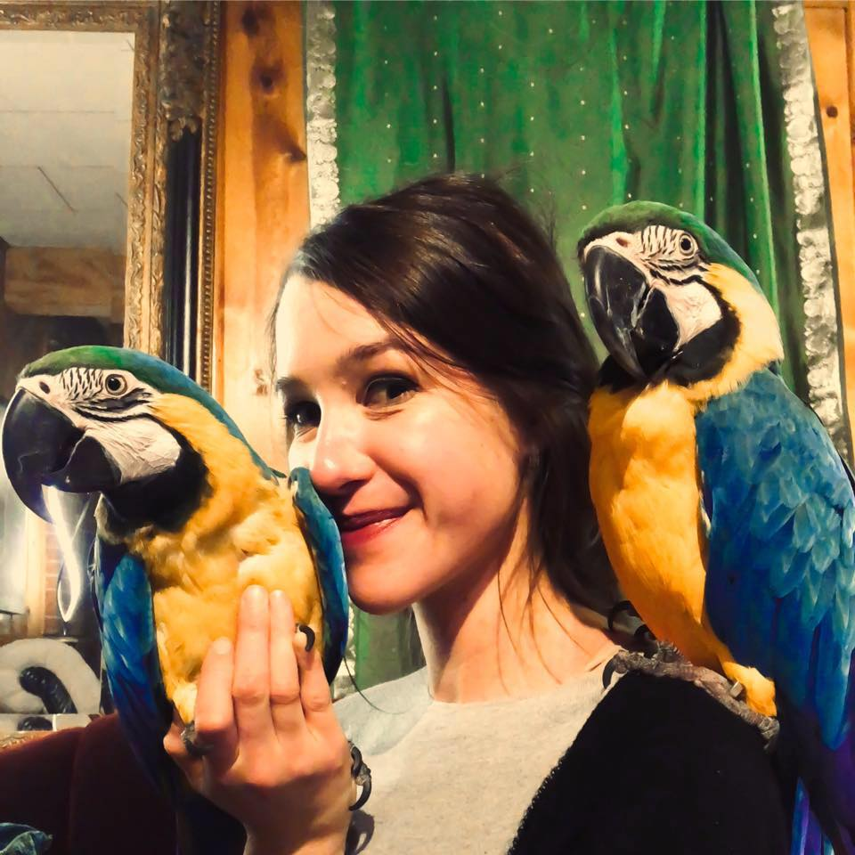
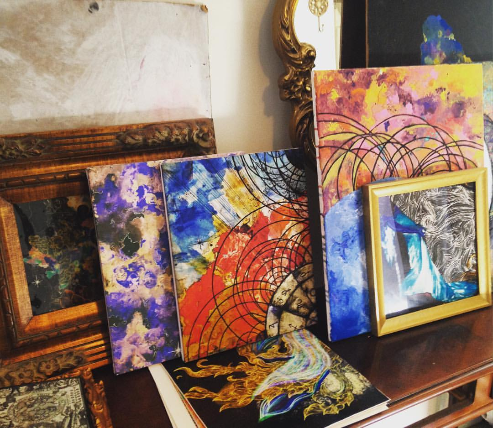

WHO AM I?
Hi, I'm Kimberly Pierson.
I am an artist of sorts.
I like surrealism.
I like parrots.
These are my two Macaws.
Their names are Bella, and Scooby.
I am trying to get better at this confusing new medium of html so I can create better in the digital sphere.
I am a non-tradional Media Arts student from Bozeman, Montana.
WHY I PICKED THIS PROJECT
This instructable exercise is just a tiny infinitesimal glimpse of the larger Surrealist Art Movement that happened in the 1920's + 30's...
I picked a surrealist creative exercise for my instructable because it’s something that helps me in a creative lulls.
Maybe someone looking at this is in such a lull?
As a media arts student, I figured I could share a creative tip... get weird, it produces suprising art.
LEARN MORE
You can learn more about Surrealism many places! For starters, check out Andre Breton's Manifesto of Surrealism. I stumbled upon this when I was a teenager, and it has been an obsession ever since.
If you want more surrealist games that you can play with other people find yourself a copy of this cute little book called A Book of Surrealist Games.
If when you think surrealism the first person who comes into your head is Salvador Dali, I encourage you to check out Leonora Carrington or Dorothea Tanning or Remedios Varo ... they are lesser known surrealist artists, and they were women! So that's fun.
Check out this event I put on a couple years ago here in Bozeman, Montana called Fantasoria. It was an attempt to revive surrealist sensibilites, a kind of "renaissance of the strange... " Here's the fundraising video from my old kickstarter project.